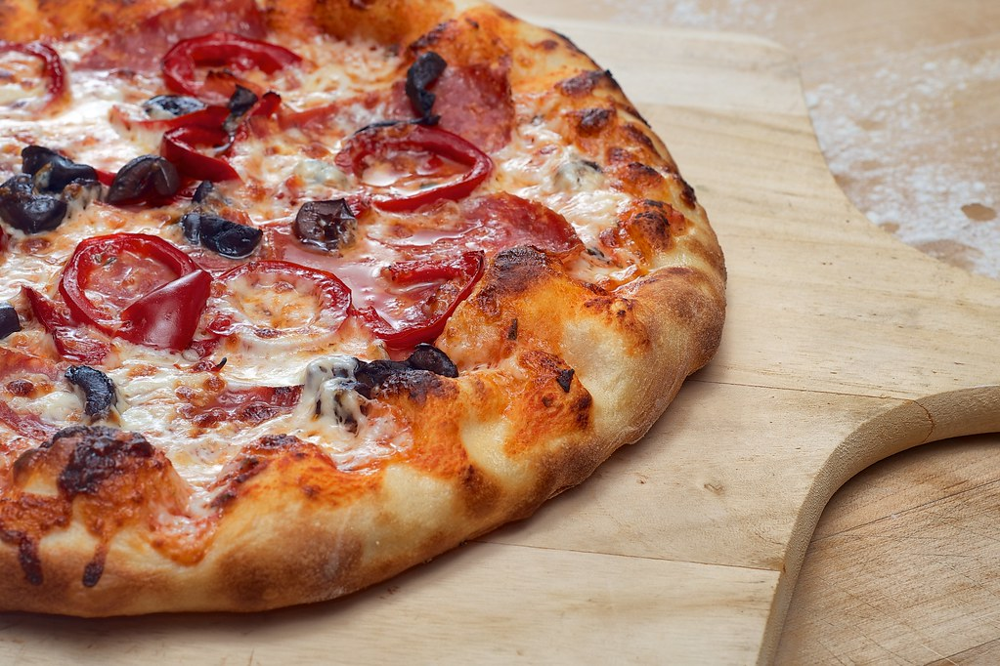

This is the recipes assignment from The Odin Project
Pizza

Ingredients
- Flour
- Water
- Salt
- Tomatoes
- Oregano
- Shredded Cheese
- Pepperoni
Steps
- Mix the water flour and salt.
- Knead that dough like a champ.
- Let the dough sit. Standing will strain its little muscles.
- After an hour of sitting, stretch that dough into a flat circle.
- Smash tomatoes into a paste.
- Add oregano to taste.
- Spread sauce onto flattened dough.
- Sprinkle shredded cheese onto the sauce.
- Add enough pepperoni so the pizza tastes good.
- Bake at 533 Kelvin until crust is golden brown and cheese is melted, usually 12-15 minutes.